Building for the agentic web with .NET 11
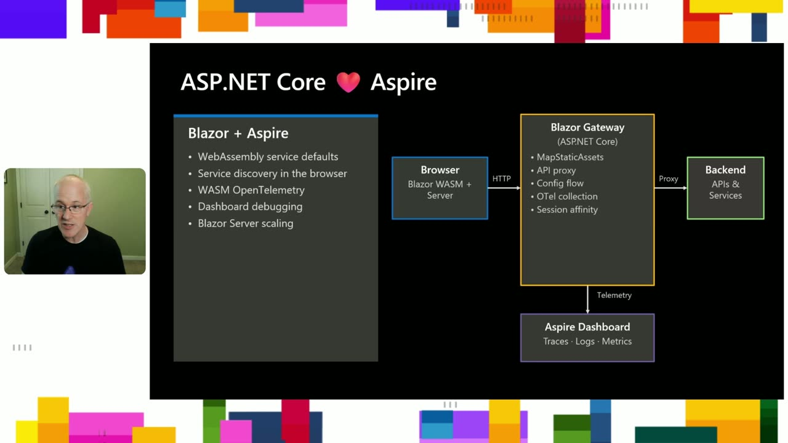
Official description
The demands on modern web apps are increasing. Users expect more performance, airtight security, and even agentic capabilities. What does the next generation of web apps look like on .NET? In .NET 11, ASP.NET Core and Blazor are getting faster and more secure at the core, closely integrated with Aspire for distributed app development, and a new set of building blocks — agents, tools, skills, and components — for building agentic web apps. Get ready to build for the modern agentic web!
Summary
Overview
Daniel Roth walks through the .NET 11 roadmap for ASP.NET Core and Blazor, organized around six themes spanning foundational improvements, the modern web stack, Aspire integration, agentic capabilities, and AI-assisted development. The session demonstrates shipped preview features and previews in-progress work to make ASP.NET Core and Blazor the best platform for building agentic web apps.
Key announcements
- Foundational upgrades require no code changes (00:02:55m05s
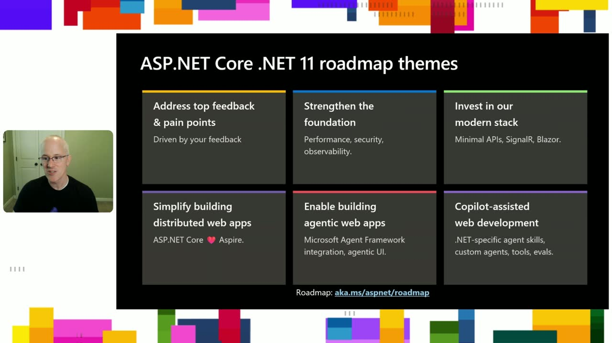
m10s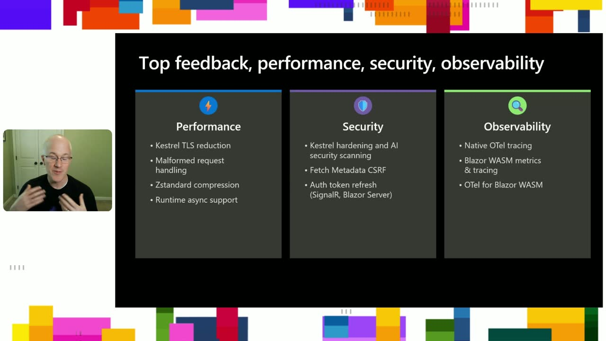
p05s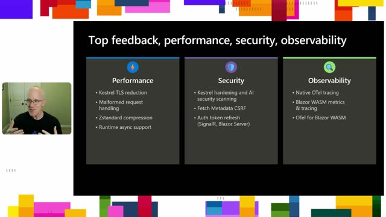
p10s) — Performance gains (reduced TLS handshake overhead in Kestrel, Zstandard compression, runtime async), security hardening (fetch metadata-based CSRF, auth token refresh for long-lived connections), and native OpenTelemetry semantic convention tags arrive simply by upgrading. - Blazor static server-side rendering parity with MVC (00:09:05
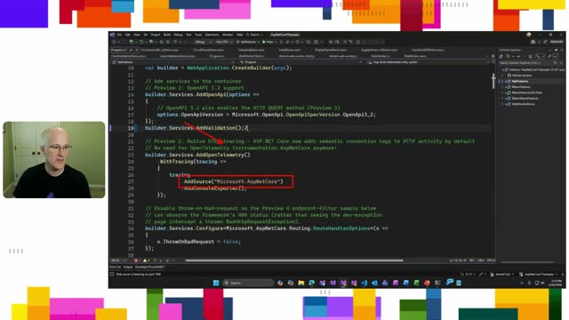
m05s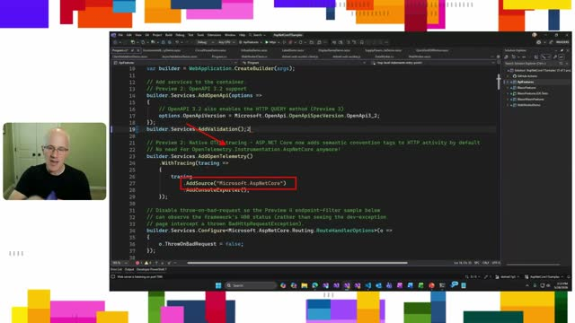
m10s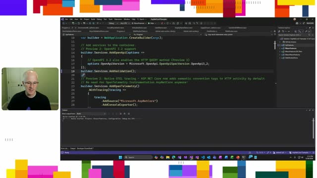
p05s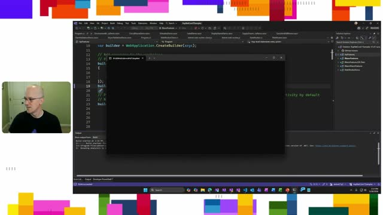
p10s) — New EnvironmentBoundary, Label, and DisplayName components, TempData support, virtualization with variable item heights, and JavaScript-based client validation that works without interactivity (no jQuery dependency, with localization). - Async validation for minimal APIs and Blazor (00:05:25m05sm10sp05sp10s) — Validation logic can perform long-running operations like database or external service checks without blocking, with new ValidateAsync APIs on EditContext.
- WebAssembly runtime consolidation from Mono to CoreCLR (00:06:30m05sm10sp05s
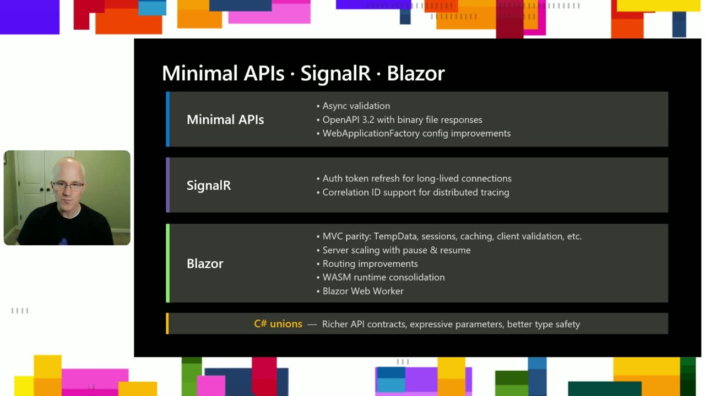
p10s) — Previewing in .NET 11, stable in .NET 12, so Wasm 3.0 features like multi-threading and 64-bit memory land on a single runtime. - Blazor Web Worker project template (00:06:55m05sm10s
 p05s
p05s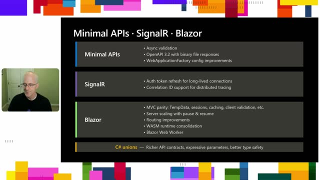
p10s) — Move CPU-intensive work off the UI thread via message passing using the existing runtime. - New Blazor gateway service for Aspire (00:22:20
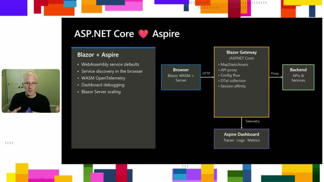
m05sm10s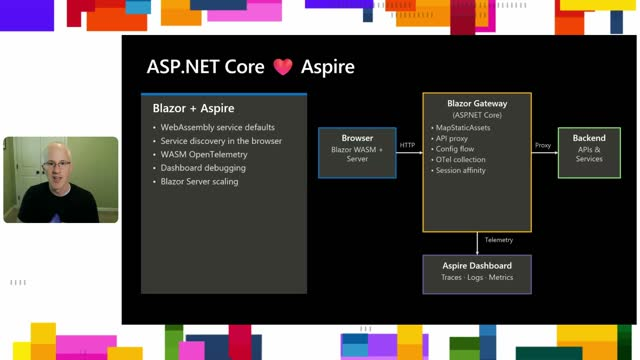
p05sp10s) — A production-grade replacement for the Blazor dev server that serves standalone WebAssembly apps with MapStaticAssets, proxies API calls, flows service discovery config, and collects OpenTelemetry. - AGUI protocol support in Microsoft Agent Framework (00:28:50m05sm10sp05s
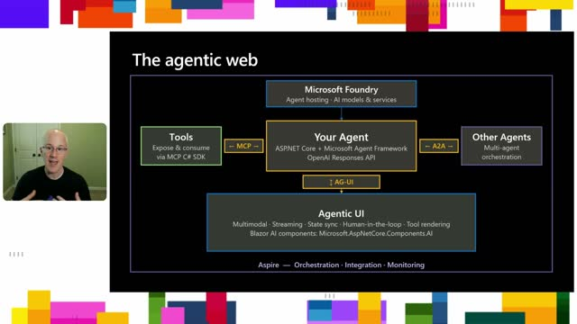
p10s) — MapAGUI endpoints, an AGUIChatClient implementing IChatClient, frontend tools, human-in-the-loop flows, and prototype Blazor AI components. - .NET Skills repo and marketplace (00:36:44
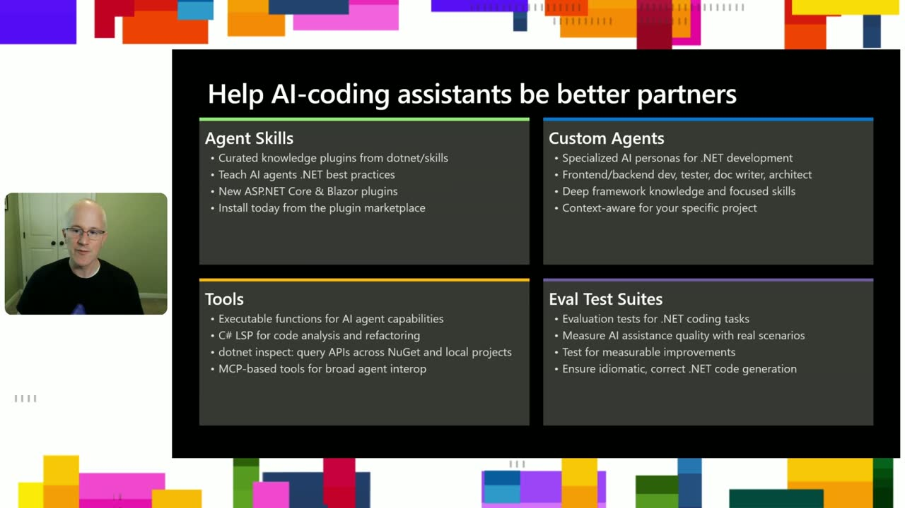
m05s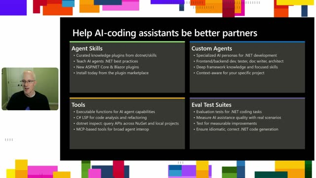
m10sp05sp10s) — Curated ASP.NET Core and Blazor coding-agent skills, custom agents, CLI/MCP tools, and eval test suites, demonstrated with a "plan UI change" skill that produces better-factored components. - OpenAPI 3.2 support (00:05:37m05sm10sp05sp10s) — Structured tags, binary file responses, and better representation of streaming responses and auth flows.
- C# unions across the ASP.NET Core stack (00:07:05m05sm10sp05sp10s) — Richer API contracts, more expressive component parameters, and better type safety.
{kind=link}
{kind=link}
{kind=link}
{kind=link}
{kind=link}
{kind=link}
{kind=link}
{kind=link}
{kind=link}
{kind=link}
{kind=link}
{kind=link}
{kind=link}
{kind=link}
{kind=link}
{kind=link}
{kind=link}
{kind=link}
{kind=link}
{kind=link}
{kind=link}
{kind=link}
{kind=link}
{kind=link}
{kind=link}
{kind=link}
{kind=link}
{kind=link}
{kind=link}
{kind=link}
{kind=link}
{kind=link}
{kind=link}
{kind=link}
{kind=link}
{kind=link}
{kind=link}
{kind=link}
{kind=link}
Topics covered
- TLS, compression, malformed request handling, and runtime async performance work
- Kestrel security hardening, fetch-metadata CSRF, and SignalR/Blazor Server auth token refresh
- Native OpenTelemetry tracing and Blazor WebAssembly browser telemetry
- Modern stack focus (minimal APIs, SignalR, Blazor) versus maintenance of MVC/Razor Pages
- Blazor SSR components, TempData, QuickGrid OnRowClick, and variable-height virtualization
- Localized data-annotation validation and asynchronous uniqueness checks
- Blazor Web Workers and the Mono-to-CoreCLR WebAssembly transition
- Aspire orchestration, service discovery, and the Blazor gateway hosting model
- Agentic protocols: OpenAI responses, agent-to-agent (A2A), and AGUI
- MCP C# SDK for exposing and consuming tools and resources
- AI-assisted development via skills, custom agent personas, tools, and eval suites
Notable quotes
"The end result is that when you upgrade to .NET 11, your apps run faster, safer, and are more observable. No code changes required." — Daniel Roth
"We want ASP.NET Core and Blazor to be the best way to build agentic web apps." — Daniel Roth
"If we can't measure it, we don't really know if it works. The eval suite helps keep us honest." — Daniel Roth [inferred]
Products and tools mentioned
- .NET 11
- ASP.NET Core
- Blazor (Server, WebAssembly, Web Workers)
- Kestrel
- SignalR
- Minimal APIs
- .NET Aspire
- Blazor gateway
- Microsoft Agent Framework
- Microsoft.Extensions.AI
- Microsoft Foundry
- MCP C# SDK
- AGUI (Agent User Interaction protocol)
- CopilotKit
- GitHub Copilot
- OpenAPI 3.2
- OpenTelemetry
- Zstandard compression
- C# LSP
- .NET Inspect
- Playwright
- .NET MAUI
- QuickGrid
- Visual Studio
Speakers featured
- Daniel Roth — Principal Product Manager for ASP.NET Core and Blazor, .NET team
Follow-up resources
- ASP.NET Core .NET 11 roadmap: aka.ms/aspnet/roadmap
- .NET 11 previews: get.dot.net/11
- .NET AI: dot.net/ai
- Aspire: aspire.dev
- .NET Skills repo: dotnet/skills (dotnet/skills)
- AGUI specification: agui.com
Frames
{kind=link}
{kind=link}
{kind=link}
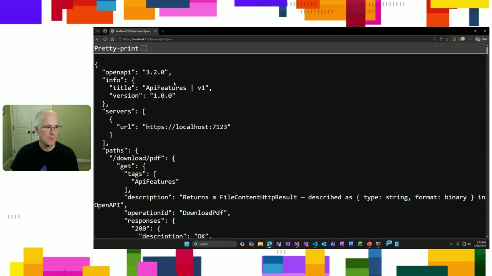
{kind=link}
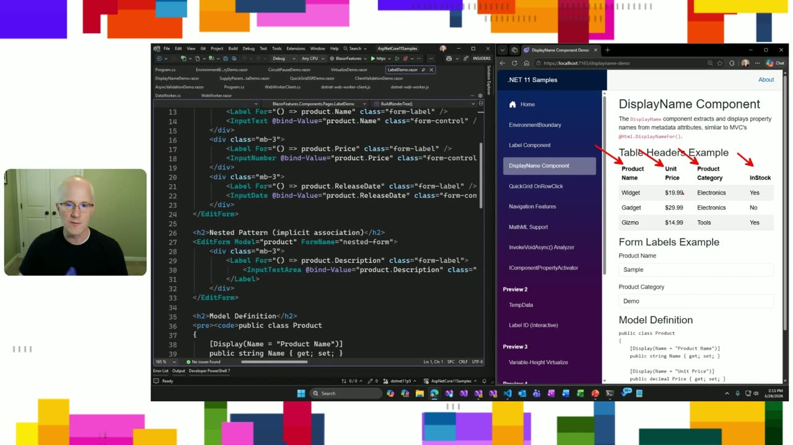
{kind=link}
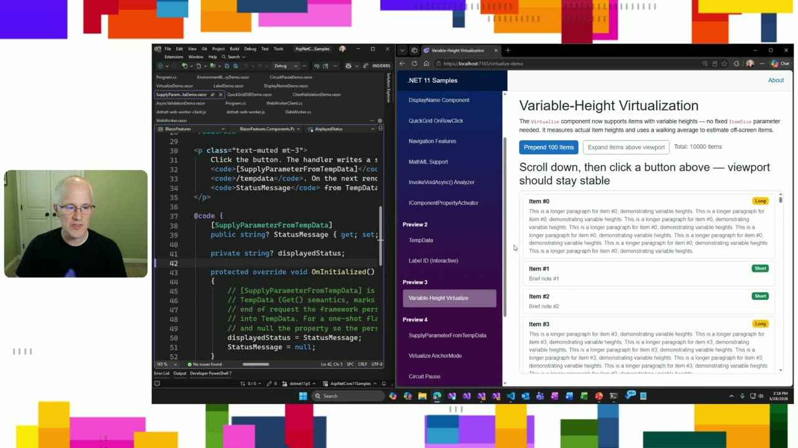
{kind=link}
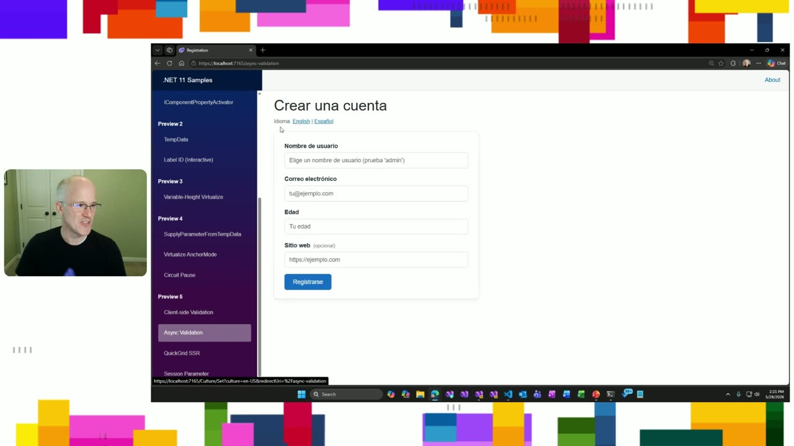
{kind=link}
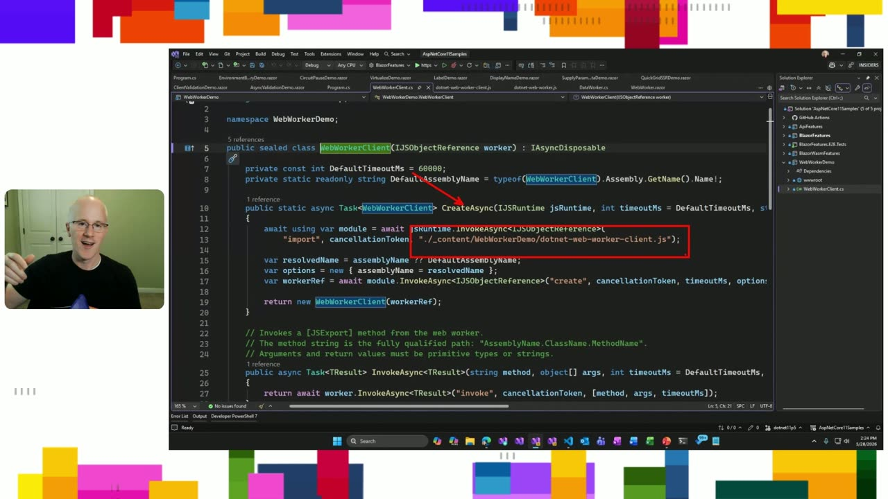
{kind=link}
{kind=link}
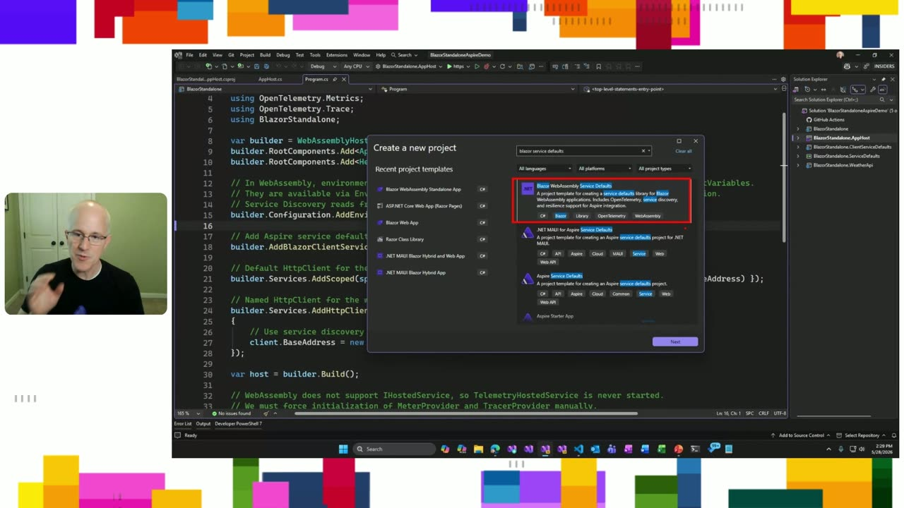
{kind=link}
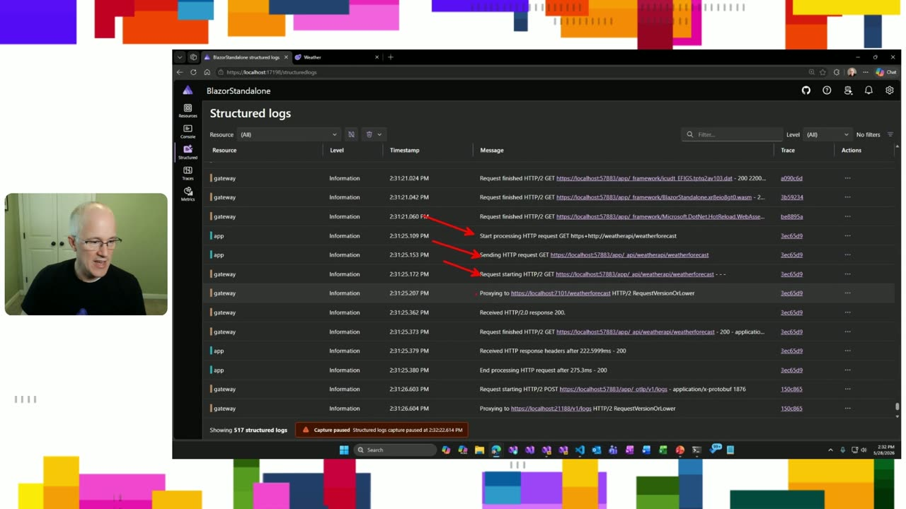
{kind=link}
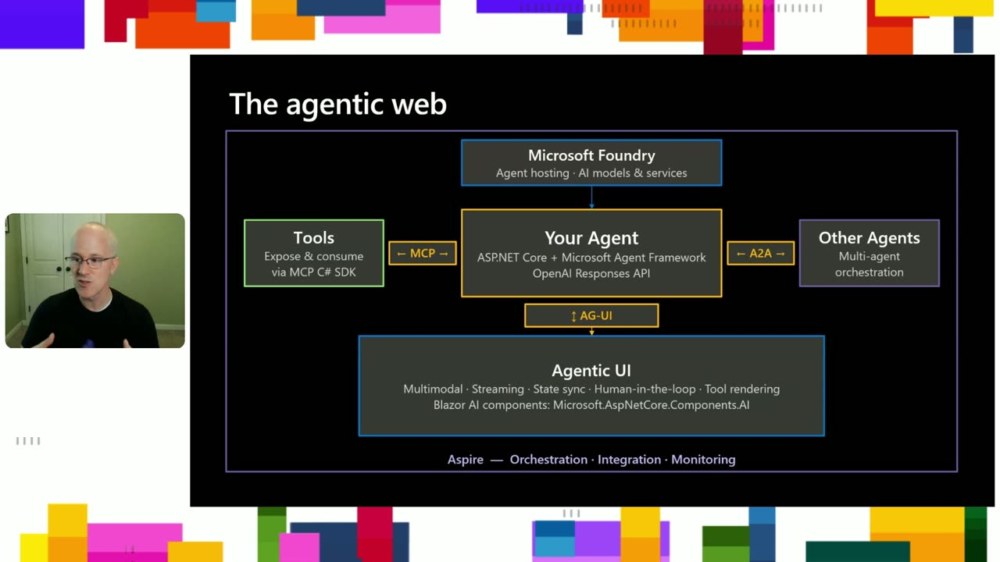
{kind=link}
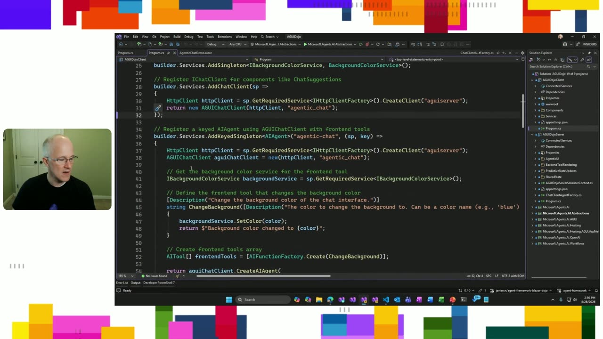
{kind=link}
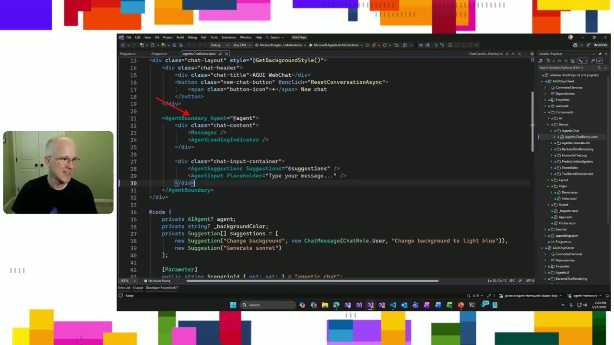
{kind=link}
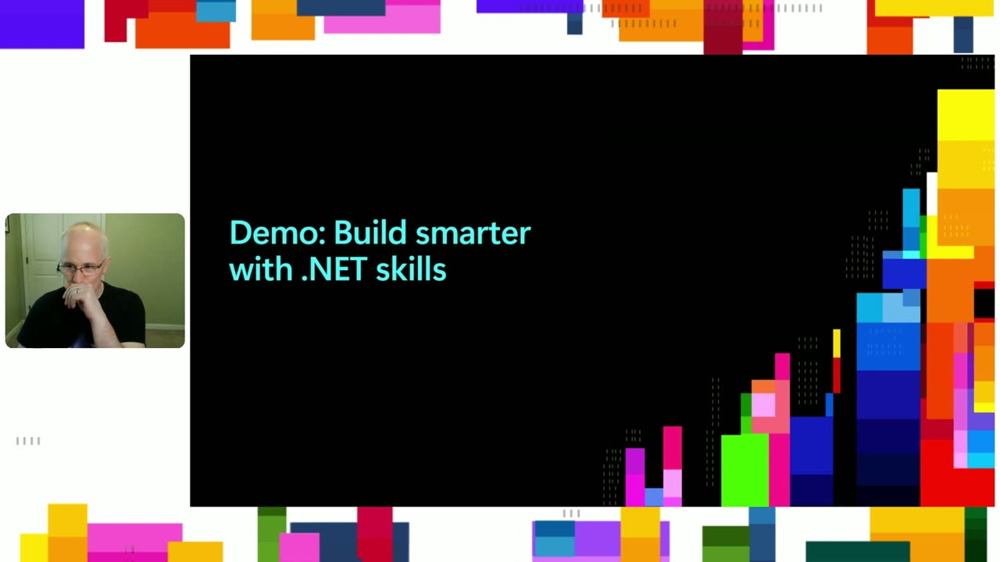
{kind=link}
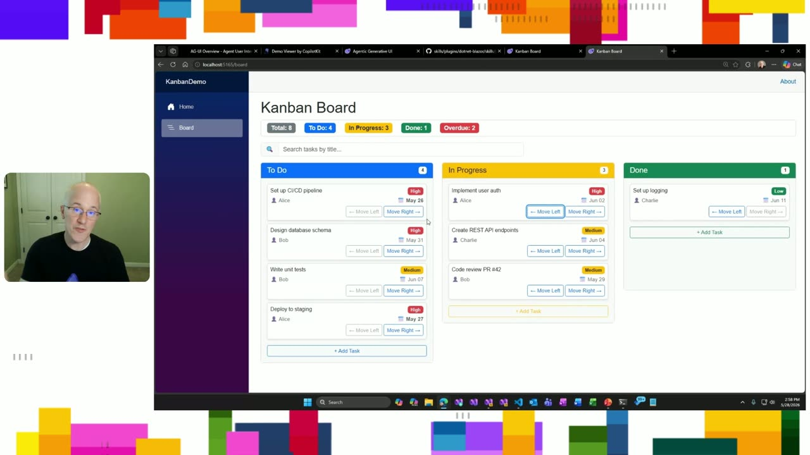
Frames around each announcement
References
Transcript
Show / hide transcript (58,593 chars)
[00:00:00] DANIEL ROTH: Hi, everyone. [00:00:01] I'm Daniel Roth, Principal Product Manager for ASP.NET Core [00:00:05] and Blazor on the.NET team. [00:00:06] Welcome to Building for the Agentic Web with.NET 11. [00:00:12] The demands on modern web apps, they just keep going up. [00:00:15] Users want more performance, airtight security, [00:00:19] and full observability into how their apps behave in production. [00:00:23] Apps need to be modern and interactive. [00:00:26] Most are cloud-native and distributed, [00:00:28] and increasingly they need agentic capabilities, [00:00:31] apps that reason, use tools, and collaborate [00:00:34] with people in real time. [00:00:36] Developers want to build more, faster, which means building [00:00:39] with AI as a partner, and the platforms underneath all [00:00:43] of this need to constantly improve to keep up. [00:00:46] In.NET 11, we're investing to address the needs [00:00:49] of the most demanding modern web apps. [00:00:52] Earlier this year, we published our ASP.NET Core roadmap [00:00:55] for.NET 11 on GitHub. [00:00:57] You can find it at aka.ms/aspnet/roadmap. [00:01:01] Everything we're doing this release is organized [00:01:03] around these six themes. [00:01:05] First, address top feedback and pain points. [00:01:08] Your feedback helps us constantly improve the [00:01:10] .NET platform. [00:01:11] The issues you open, the comments you post, [00:01:14] the thumbs-up reactions, they directly drive what we work on. [00:01:19] We're addressing as many top-voted issues this release [00:01:21] as we can. [00:01:23] Strengthen the foundation. [00:01:25] Performance, security, observability, [00:01:28] these underpin everything we do [00:01:30] and are what make.NET a platform that you can trust. [00:01:34] .NET runs some of the biggest services in the world [00:01:36] at Microsoft, like Entra, Bing, Teams, Xbox, and most of Azure, [00:01:42] and the demands of those workloads push us [00:01:44] to keep raising the bar. [00:01:45] As a result, everyone benefits. [00:01:48] Next, invest in our modern stack. [00:01:50] Minimal APIs, SignalR, Blazor, [00:01:53] these are where we're actively innovating [00:01:55] and adding new capabilities [00:01:57] to help you build great modern web apps. [00:02:00] Simplify building distributed web apps. [00:02:03] Modern web apps are distributed and cloud-ready. [00:02:05] We're working closely with our friends on the Aspire team [00:02:08] so that building, running, and deploying multi-service apps [00:02:11] that integrate with a variety [00:02:12] of cloud services feels easy and natural. [00:02:16] Enable building agentic web apps. [00:02:19] This includes integration with the Microsoft Agent Framework, [00:02:23] the MCP C-Sharp SDK and supporting new UI patterns [00:02:27] for AI-driven experiences. [00:02:29] We want ASP.NET Core and Blazor to be the best way [00:02:32] to build agentic web apps. [00:02:33] And then finally, [00:02:34] Copilot-assisted web development. [00:02:36] We want AI coding assistance to love working with.NET as much [00:02:40] as you do, through agent skills, custom agents, [00:02:43] tools and evaluation test suites [00:02:46] that measure real-world coding agent effectiveness. [00:02:49] Let's dive into each of these themes. [00:02:51] First, let's look at how we're strengthening the foundation. [00:02:55] Fundamentals are something that we focus [00:02:57] on with every.NET release, [00:02:59] because that's what makes.NET a platform that you can count on, [00:03:03] and the great thing is, you get many [00:03:04] of these improvements just by upgrading. [00:03:07] First of all, performance. [00:03:08] We try to make every release of.NET the fastest release ever. [00:03:12] This release, we're reducing TLS handshake overhead in Kestrel [00:03:16] so short-lived connections are faster. [00:03:18] We're also optimizing how we handle malformed requests [00:03:21] so you can shed bad traffic efficiently and free [00:03:24] up that capacity for your real users. [00:03:26] We've added Z standard compression support, [00:03:28] which gives you broadly level compression ratios [00:03:31] at much lower CPU cost. [00:03:33] And we're working with the runtime team on runtime async, [00:03:37] a more efficient async implementation to make sure [00:03:40] that it works great across the platform, including for web. [00:03:43] Next, security. [00:03:45] We're hardening Kestrel, [00:03:46] our cross-platform high-performance web server, [00:03:49] and running security scans [00:03:51] on our code base using the latest AI models [00:03:53] to ensure our platform is secure and trustworthy. [00:03:56] We're modernizing our cross-site request forgery support using [00:04:00] fetch metadata headers like fetch site and fetch mode based [00:04:04] on the latest OWASP recommendations. [00:04:06] And for long-lived connections, like you have with SignalR [00:04:09] and Blazor Server, we're also adding automatic auth token [00:04:13] refresh, a long-standing request [00:04:15] that closes a real usability gap. [00:04:18] And then finally for observability, [00:04:20] ASP.NET Core now emits OpenTelemetry semantic [00:04:23] convention tags natively. [00:04:25] Every request is automatically traced using the OTel [00:04:27] conventions without requiring external instrumentation. [00:04:32] And we're working on full OpenTelemetry support [00:04:34] for Blazor WebAssembly so that component-level metrics [00:04:37] and traces from the browser show up in the same dashboards [00:04:40] as your server telemetry. [00:04:42] The end result is that when you upgrade to.NET 11, [00:04:44] your apps run faster, safer, and are more observable. [00:04:48] No code changes required. [00:04:52] Next, our modern stack. [00:04:54] We're focusing our ASP.NET Core investments in.NET 11 [00:04:58] on our modern stack, minimal APIs, SignalR, and Blazor. [00:05:02] That's where we're pushing boundaries [00:05:03] and adding new capabilities. [00:05:05] Other parts of ASP.NET Core like MVC, Razor Pages, [00:05:09] API controllers, they'll of course continue to be supported [00:05:12] and will benefit from the foundational improvements [00:05:14] that I mentioned earlier. [00:05:16] But that's not really where we're innovating. [00:05:18] Our investments are focused on our modern web stack [00:05:20] that most clearly aligns with modern web app needs. [00:05:25] For minimal APIs, and also for Blazor in this case, [00:05:27] we're adding support for async validation [00:05:30] so that your validation logic can perform long-running [00:05:32] operations without blocking, [00:05:34] like checking a database or external service. [00:05:37] We now support the latest OpenAPI version, OpenAPI 3.2, [00:05:41] with proper support for binary file responses. [00:05:44] And we're fixing a long-standing testing pain point [00:05:47] when using Web Application Factory with minimal APIs [00:05:49] and trying to set up custom configuration. [00:05:52] SignalR is getting off-token refresh support, [00:05:54] like I mentioned earlier, for long-lived connections, [00:05:57] and we're also adding correlation ID support [00:06:00] for distributed tracing. [00:06:02] Blazor has a lot happening. [00:06:04] We're filling out Blazor's server-side rendering model [00:06:07] so that you can use static server-side rendering [00:06:09] without compromise. [00:06:11] We're adding support for TempData, [00:06:13] binding to session state, output caching, client validation [00:06:16] without requiring interactivity, [00:06:18] adding async validation, and much more. [00:06:21] We're trying to make it easier also [00:06:22] to scale your Blazor server apps using pause and resume [00:06:25] so that you can free up those resources [00:06:27] when they're being held by idle circuits. [00:06:30] On WebAssembly, the big story is our runtime [00:06:33] consolidation effort. [00:06:35] We're transitioning the.NET WebAssembly runtime [00:06:37] from mono to core CLR. [00:06:40] We'll preview that in.NET 11 [00:06:41] and then ship it stable in.NET 12. [00:06:44] New runtime capabilities like multi-threading, 64-bit memory, [00:06:48] and all the other Wasm 3.0 features will land [00:06:51] on the core CLR-based runtime, [00:06:53] so we don't have to build them twice. [00:06:55] In the meantime, we are also shipping a new project template [00:06:59] for Blazor Web Workers that allow you [00:07:01] to move CPU-intensive work off of the UI thread today. [00:07:05] And lastly, support for C-Sharp unions. [00:07:08] Union support is coming to C-Sharp finally, [00:07:10] and we're lighting it up across the entire ASP.NET Core stack [00:07:14] for richer API contracts, more expressive component parameters, [00:07:18] and better type safety. [00:07:20] All right, enough slides. [00:07:22] Let me show you some of these new improvements [00:07:24] that we've shipped in the.NET 11 previews so far. [00:07:27] So here I have some sample applications [00:07:29] that demonstrate a lot of the new functionality in.NET 11. [00:07:33] First, let's look at some of the new minimal API improvements. [00:07:35] Here in this minimal API project, [00:07:37] you can see that right here, we've got support [00:07:41] for OpenAPI 3.2 wired up and configured, ready to go. [00:07:44] We can see that if we go ahead and start this app [00:07:46] and get it running -- actually, [00:07:50] let's make sure we actually start the API project. [00:07:55] All right, great. [00:07:56] And let's go ahead and open this up in a browser [00:07:58] so we can just see the OpenAPI document. [00:08:03] There we go, and if we zoom in, you can see, yup, in fact, [00:08:05] this is using OpenAPI 3.2. [00:08:07] What does this give you? [00:08:08] OpenAPI 3.2 adds support for structured tags, better support [00:08:13] for streaming responses like server-sent events, [00:08:16] and better representation of different off-flows. [00:08:19] Also, if we look at what's happening in the console, [00:08:21] we can see that we're currently dumping to the console all [00:08:24] of the activity tags, and we can see that we're getting, [00:08:27] out of the box, OpenTelemetry semantic conventions [00:08:30] for the HTTP request, for the response, for the route, [00:08:35] and that's without having to add any additional instrumentation. [00:08:38] If go back to the code for the app, here we can see [00:08:40] that all we're doing is adding the trace source [00:08:43] for Microsoft ASP.NET Core. [00:08:45] We don't have to add the OpenTelemetry instrumentation [00:08:49] ASP.NET Core package anymore, although you probably still want [00:08:52] to because it does bring some niceties. [00:08:54] Hopefully, this native support [00:08:55] for the OpenTelemetry semantic conventions will just make it [00:08:58] more efficient. [00:09:01] Okay, so that's OpenTelemetry and minimal APIs. [00:09:05] Let's look at some Blazor features. [00:09:06] Let me switch this over to Blazor and run this. [00:09:16] There we go. [00:09:16] Okay, so for Blazor, we got all sorts of new goodies. [00:09:19] A major focus for Blazor in.NET 11 is giving you parity [00:09:24] with static server-side rendering features [00:09:27] that you probably are used to with MVC [00:09:29] but haven't been available in Blazor yet. [00:09:31] Let me go ahead and snap this side by side with Visual Studio [00:09:34] so we can see these things together with the code. [00:09:37] Let's try and do like that. [00:09:38] Okay, so first of all, environment boundary. [00:09:42] This is a new component that we've added in.NET 11 [00:09:44] that lets you conditionally render some content based off [00:09:48] of the current ASP.NET Core environment. [00:09:50] For example, you might want to render some content only [00:09:52] if you're in development or in development and staging. [00:09:55] You can also say that I want to exclude this content, like, [00:09:58] don't render this content when I'm, like, in production, [00:10:01] and you can see the corresponding content being [00:10:02] rendered over here in the application. [00:10:05] So that's the new environment boundary component, [00:10:07] corresponds to the environment tag helper in MVC. [00:10:11] We also have a new label component [00:10:12] that makes it much easier for you to set up labels [00:10:15] for your Blazor forms. [00:10:16] Here's the label component in action. [00:10:19] You can see that we're using just a normal C-Sharp expression [00:10:22] to point to the model property that we want [00:10:24] to generate this label for, [00:10:26] and that's generating us a nice label in our form [00:10:29] with a friendly display name, properly associated [00:10:32] with its input text HTML element. [00:10:37] You can also, of course, use the label component using the [00:10:40] wrapping pattern where you wrap the input. [00:10:42] That works, too. [00:10:44] Display names, a new component that actually will give you [00:10:47] that friendly name for the property. [00:10:50] Here in this table, you can see we've got friendly names being [00:10:53] displayed for each column [00:10:54] in this QuickGrid, data grid component. [00:10:57] If we look at the code for that, that's right here. [00:11:01] So here's where all those table headings are being generated, [00:11:05] and they're being generated using this new display name [00:11:07] component, which again, you just pass in a C-Sharp expression [00:11:10] and it will pull out the friendly name [00:11:12] for that particular property. [00:11:14] Down below, you can see that we're also showing an example [00:11:17] of using that display name component [00:11:19] for generating a label. [00:11:21] This is effectively what the new label component is doing [00:11:24] for you. [00:11:26] QuickGrid has some new bells and whistles as well. [00:11:28] Let me make this a little bit wider so we can see. [00:11:30] QuickGrid now has a new on-row click component parameter [00:11:35] that you can use to wire up an event handler [00:11:37] for when the user clicks on a particular row [00:11:39] and then gives you the modeled instance [00:11:41] that was used to render that row. [00:11:43] So if I click on rows in this table, [00:11:44] you can see that it selects the specific person [00:11:47] and then displays it. [00:11:48] So that's pretty nice, pretty cool. [00:11:51] We don't have time to go through all of these, but we'll get [00:11:53] through as many as we can. [00:11:54] TempData is a -- actually, let's do the supply parameter [00:11:57] from TempData version of this. [00:11:59] TempData is a feature that if you've used MVC before, [00:12:01] you're probably familiar with. [00:12:03] It's where you want to save a little piece of data [00:12:05] so that it can be read again on a subsequent page navigation. [00:12:10] Often this is used when you have a form, you do like a post [00:12:12] and then a redirect get, you want to save a little data [00:12:15] to display on that subsequent redirect. [00:12:18] So you can now do that in Blazor. [00:12:20] We support TempData. [00:12:21] Like here, if I click on this button, it'll do a post request [00:12:24] and it'll save a little piece of information, in this case, [00:12:26] the server time into a message that can be read [00:12:30] from the page when it then renders. [00:12:32] If we look at the code for what that looks like -- [00:12:34] let me bring this over to the side and let's look [00:12:37] at the supply parameter from form example. [00:12:40] So here's our edit form, [00:12:42] and then there's the submit button that's -- [00:12:46] when you click on the button, [00:12:47] that actually will capture the server time, the definition, [00:12:50] we should be able to see that. [00:12:51] So here you can see that we're grabbing the server time, [00:12:54] and then we're saving it in this status message property. [00:12:57] We'll look at that just a second. [00:12:58] And then we do that navigation. [00:12:59] So this was a full page navigation. [00:13:00] It's not an interactive rendering scenario. [00:13:03] We then scroll back above. [00:13:04] We can see that that status message property has this new [00:13:09] supply parameter from TempData attribute, which is saying [00:13:12] that this parameter should be saved in TempData [00:13:15] and then made available, [00:13:16] read out of TempData when the page loads. [00:13:19] That's how we're able to then render that message. [00:13:22] If we then refresh the page, the TempData, of course, [00:13:24] goes away because it's just a temporary place [00:13:26] to store some information, usually stored in a cookie, [00:13:29] although you can use other providers as well. [00:13:32] That's new TempData support. [00:13:34] There's some new enhancements to virtualization. [00:13:38] Let me show this example. [00:13:39] So here we are using the virtualized component [00:13:42] to render a very long list of items. [00:13:44] I think it's -- in this case, it's like, yeah, 10,000 items [00:13:46] that we're rendering in this list. [00:13:48] Virtualized is a nice component [00:13:50] that lets you just display a long list of stuff, [00:13:53] but only have to render the parts [00:13:55] that are currently visible, [00:13:58] and you just basically create a virtualized component [00:14:01] and provide it the items you want to render [00:14:02] and then how you want them to be rendered. [00:14:04] Previously, you had to specify a fixed item size, [00:14:07] like a fixed height for each item, so it could figure [00:14:08] out which items were actually visible. [00:14:11] Now it does the even more complicated logic of figuring [00:14:13] out how to render the right items [00:14:15] when they even have different heights, [00:14:16] as you can see here in this example. [00:14:18] So we're rendering 10,000 rows really efficiently [00:14:21] and very fast. [00:14:22] Very nice. [00:14:23] And now a couple other improvements with validation. [00:14:27] So on this page, again, another example [00:14:30] of where we're improving static server-side rendering, [00:14:32] this is a form where we have client-side validation logic. [00:14:35] Like, if I go and -- let's try and type my name, [00:14:38] but I only put a single character, a tab off, [00:14:39] you can see that it validates, but unlike other Blazor forums [00:14:43] in the past, this page is not interactive. [00:14:46] And if we open up the browser dev tools [00:14:51] and let's clear all filters [00:14:53] and just refresh the page one more time [00:14:55] so we can see what's happening, [00:14:57] if we look at the WebSocket connections on this page, [00:14:59] there is a WebSocket, but that's just this browser refresh thing [00:15:02] from Visual Studio. [00:15:03] There's no Blazor server WebSocket. [00:15:05] There's also no WebAssembly being loaded on this page. [00:15:08] It's just a normal static server-side rendered page, [00:15:10] but we're still getting [00:15:11] that rich client-side validation support. [00:15:13] How is that happening? [00:15:14] Well, Blazor now has built-in client-side validation logic [00:15:18] that can be run even when you're running without interactivity. [00:15:21] We have a new -- [00:15:23] a JavaScript-based validation library that's incorporated [00:15:26] with Blazor that enables these scenarios so you don't fall off [00:15:28] that cliff from going from static server-side rendering [00:15:31] to having to enable interactivity just [00:15:34] because you want some validation on your form. [00:15:36] So that's pretty cool. [00:15:37] It works also when you send the message. [00:15:39] It's a very lightweight library, too. [00:15:40] It has no jQuery dependency, which is really nice, [00:15:43] but if we look at how it's being implemented [00:15:47] like on the actual elements here, [00:15:48] you can see that it's using the same data validation attributes [00:15:52] that are used by MVC and Razor Pages. [00:15:56] If we then switch the language for this form from English [00:15:59] to Spanish, and then let's trigger the validation again, [00:16:03] you can see that now my validation error messages are [00:16:05] being rendered localized, which is fantastic. [00:16:09] So data annotation-based validation messages now get [00:16:12] localization, long-standing pain point now addressed in.NET 11. [00:16:17] And then lastly for validation, I want to show this form. [00:16:20] This form's a little bit -- oh, we should probably switch back [00:16:22] to English so we can -- for us English speakers out there. [00:16:26] Refresh, great, okay. [00:16:28] So here what I want to do is I want to select like a username [00:16:31] for an account, but this username needs to be unique. [00:16:34] If I select a username that's already taken, [00:16:36] then I should get a validation error. [00:16:38] Like let's say I try to grab the admin username, [00:16:40] that's almost certainly taken. [00:16:42] Notice that I get a little bit of UI experience there saying, [00:16:45] hold on, I'm checking the database to see [00:16:47] if that username's taken already, and it is. [00:16:50] That was an asynchronous validation check. [00:16:53] It wasn't synchronous. [00:16:55] It was a long-running activity and we were able [00:16:57] to even add some UI experience as part of the check happening. [00:17:02] If I then select a username that maybe it's not already taken, [00:17:05] like my favorite username, then, yeah, [00:17:07] that one's currently available. [00:17:09] So if we look at the code for this page, [00:17:12] the async validation page here, when we look at the edit form, [00:17:19] we can see that there's some nice new APIs [00:17:20] that have been added to the edit context. [00:17:22] Like here's the edit context that now has APIs for checking. [00:17:26] Are we in the process of validating? [00:17:27] Is the validation faulted in some way? [00:17:29] And is validation messages available? [00:17:32] And if we look at the handle submit implementation, [00:17:36] we can see that there is now a validate async method [00:17:38] on edit context. [00:17:40] So this is part of the story. [00:17:41] In.NET 11, we're also working [00:17:43] on actually adding async validation support [00:17:46] to the system component model data annotations, APIs as well, [00:17:50] in the core libraries. [00:17:51] That's still coming, but once that's in, you'll be able [00:17:53] to just annotate your types [00:17:55] with asynchronous validation attributes and have that plug [00:17:57] into this experience, too. [00:17:59] Okay? Cool. [00:18:00] So those are some [00:18:01] of the server-based Blazor improvements. [00:18:03] What about WebAssembly? [00:18:04] Well, there are WebAssembly improvements as well. [00:18:07] Let me close that up and let's switch. [00:18:12] Let's shut this down. [00:18:13] Okay, so we also -- and you can see in the solution, [00:18:16] we have a Blazor, a standalone Blazor WebAssembly app, [00:18:19] and then we also have a new Blazor Web Worker project. [00:18:23] So Blazor Web Worker is a way to run some.NET code [00:18:27] on WebAssembly in the browser, but not on the UI thread. [00:18:30] Have it run in a separate Web Worker. [00:18:31] If you want to create one, [00:18:32] there's a new project template you can use. [00:18:35] You just search here for Web Worker. [00:18:37] We should find it. [00:18:38] Yup, there it is. [00:18:40] So this guy right here. [00:18:41] That's the new Blazor Web Worker project template that I used [00:18:45] for this sample application, and it's just reference [00:18:48] from the Blazor Wasm Features project, [00:18:53] which is just a standalone Blazor WebAssembly app. [00:18:55] And what this gives you is it gives you this Web Worker client [00:18:59] class that you can use to create Web Worker clients, [00:19:02] and that will then run a bunch of JavaScript, which will set [00:19:05] up the.NET runtime to run [00:19:07] in a Worker instead of on the UI thread. [00:19:11] And then you have this InvokeAsync method [00:19:13] that you can then use to call some code that you want [00:19:17] to have executed on that Worker thread. [00:19:22] So here in this app, I've got this data worker class that's [00:19:28] sitting in the Blazor WebAssembly project, [00:19:30] and it has this AnalyzeSalesData method [00:19:34] that you can see is labeled as a JS export, so it can be called [00:19:37] from that Web Worker, and this just does a whole bunch of like, [00:19:40] you know, compute, like it takes a bunch of sales records [00:19:42] and does a bunch of number crunching on them, [00:19:43] some CPU-intensive task. [00:19:45] If we tried to do this on the UI thread, [00:19:47] it would probably freeze the UI thread [00:19:49] and prevent UI interactions, but with the new Web Worker, [00:19:51] we can push it off on to a separate Web Worker [00:19:57] so it doesn't block the flow. [00:19:59] So let's see what that looks like if we run it. [00:20:01] We switch to Visualizing Features and let's run this. [00:20:08] Okay, so there's going two variations of this app, [00:20:11] one where we're going to run it locally, like on the UI thread, [00:20:14] and then one where we run it on the Web Worker. [00:20:16] So here you can see there's this counter that's chugging away. [00:20:19] That's showing us that the UI thread is healthy. [00:20:21] If I try to process like, you know, a quarter million [00:20:23] of the sales records on the main thread, [00:20:26] notice that the counter freezes, things aren't running anymore. [00:20:29] We've blocked threads. [00:20:30] That's not great, but if we instead choose to process it [00:20:33] on a Web Worker, let's do that, [00:20:36] notice that the counter continues to chug along. [00:20:38] We haven't blocked the UI thread. [00:20:39] We can still navigate around the app, and we're able to do [00:20:42] that processing, okay? [00:20:44] Now, to be clear, this is not like true multithreading. [00:20:46] There's no shared memory here [00:20:48] between the Web Worker and your UI thread. [00:20:50] You can think of it more like a separate process. [00:20:53] It's just message passing between the two, [00:20:55] and you are actually loading a second.NET WebAssembly runtime [00:20:59] in that Web Worker, so can be a bit memory-heavy, [00:21:02] so be judicious in how you use this feature. [00:21:05] But still, very cool way for you to move [00:21:07] that CPU-intensive work off of the UI thread [00:21:10] with the existing runtime. [00:21:13] All right, those are some of the new improvements [00:21:16] that are already available with.NET 11, the.NET 11 previews. [00:21:21] All right, next, let's talk about how we're making it easier [00:21:25] to build distributed and cloud-ready.NET web apps [00:21:30] with Aspire, with our friends on the Aspire team. [00:21:34] Modern web apps are, of course, distributed. [00:21:37] You've typically got a front end, you've got backend APIs, [00:21:40] you have AI services that you're talking to, databases, caches. [00:21:44] That's a lot of moving parts. [00:21:46] Aspire solves these development and deployment concerns. [00:21:50] It gives you orchestration, observability, [00:21:53] and configuration management for distributed apps. [00:21:56] You get a great local development experience [00:21:58] and a clean deployment story. [00:22:00] In the.NET 11 timeframe, we're deepening our Blazor [00:22:03] and Aspire integration. [00:22:05] We're making Blazor WebAssembly work properly with Aspire [00:22:08] so that you get configuration, service discovery, [00:22:11] OpenTelemetry, and simplified debugging [00:22:13] from the browser all the way through to the backend. [00:22:16] We're also integrating with Aspire [00:22:18] to simplify Blazor server scaling. [00:22:20] Now, to make all this work, [00:22:21] we're adding a new Blazor-specific Aspire host [00:22:23] integration package and a new Blazor gateway service that sits [00:22:28] between the browser and your backend. [00:22:30] It serves your standalone Blazor WebAssembly apps using [00:22:34] MapStaticAssets, so gets all the optimizations there. [00:22:37] It also handles proxying API calls to any backend services. [00:22:42] So no need for cores. [00:22:44] It will flow configuration data, [00:22:46] like your service discovery data, to the client, [00:22:50] and it also collects OpenTelemetry information [00:22:53] for like populating the Aspire dashboard, [00:22:55] and it can handle a session affinity as well. [00:22:59] It replaces our existing Blazor dev server that we've used [00:23:02] for many years for local development with something [00:23:04] that is now production-grade. [00:23:05] It's good for local development, [00:23:07] but also when you deploy the app, it can be used [00:23:10] as a production service to host your standalone Blazor [00:23:13] WebAssembly apps with all the appropriate optimizations [00:23:16] and integrations. [00:23:17] Let me show you what I mean. [00:23:22] Okay, let me switch out of this app. [00:23:26] Let's look at a standalone Blazor WebAssembly app [00:23:30] that has now been integrated fully with Aspire, okay? [00:23:33] So here in this solution, we've got a few things going on. [00:23:35] We have a -- this is a Blazor WebAssembly project, [00:23:38] just a standalone project, so no server component, [00:23:41] and then we have a backend API, like a minimal API [00:23:45] for getting somewhat [00:23:46] of the Blazor WebAssembly frontend calls. [00:23:49] And then we have some normal Aspire stuff, [00:23:51] like we see the Aspire app host, [00:23:52] which is orchestrating all the parts, our front end [00:23:55] and our back end, and we see the service defaults project, [00:23:58] which wires up things like health checks, [00:24:00] resiliency, and all that stuff. [00:24:02] What's new is we also now have this client service default [00:24:06] project, which can be used to set up specific service defaults [00:24:09] that are needed for the Blazor WebAssembly apps, [00:24:10] like specific concerns that are needed when running [00:24:13] from the browser, similar to the new service defaults template [00:24:19] that MAUI has for building native mobile applications. [00:24:22] Now, to create that client service defaults project, [00:24:24] there's a new project template. [00:24:25] You can see it here. [00:24:26] If we go looking for Blazor service defaults, there it is. [00:24:32] There's the new Blazor WebAssembly service defaults [00:24:35] template that you can use to set up your Blazor WebAssembly app [00:24:38] to work great with Aspire. [00:24:40] Okay, now let's take a look at the app host project. [00:24:43] Notice that it's referencing the new Blazor Aspire hosting [00:24:47] integration package, and inside AppHost.cs, [00:24:51] we've got a couple things going on. [00:24:52] First of all, we're setting up the API project. [00:24:54] That's nothing new there. [00:24:55] That's pretty standard, but then we have this new Add Blazor Wasm [00:24:59] project for our Blazor WebAssembly app, [00:25:01] and it has a reference to that API project. [00:25:03] So Aspire now knows that this front-end client app wants [00:25:06] to talk to that API and needs to make it available [00:25:09] so that it can actually be called with an actual endpoint. [00:25:12] Then we have our new Blazor gateway that we're setting [00:25:15] up to actually host the Blazor WebAssembly app. [00:25:17] That's what this Blazor client app call is doing, [00:25:21] and it will also expose the API endpoints that that app needs [00:25:25] to call, and it will also collect the OpenTelemetry data [00:25:28] from the client so that you can see the whole flow end [00:25:32] to end in your application. [00:25:33] Let's go ahead and run this so we can see what it looks like. [00:25:36] I'm going to run the AppHost project. [00:25:39] Oh, cool. That should bring up the Aspire dashboard. [00:25:46] Awesome. Okay, so what do we got here? [00:25:47] We have a couple resources that are showing. [00:25:50] We have our gateway, which is the new service that's going [00:25:54] to host our Blazor WebAssembly app, and you can see [00:25:56] that the Blazor WebAssembly app is sort of nested underneath it, [00:26:00] and then we have the API [00:26:02] that the Blazor WebAssembly app will call. [00:26:05] Now, if we browse to our Blazor app, make sure it's working [00:26:09] so we can navigate around, we can click the counter. [00:26:12] We click on the Weather page and that was able to -- [00:26:14] looks like it got some weather data, so it was able to call [00:26:16] that weather API and get some data back. [00:26:19] Now, a few things to note in the code, like if we go and look [00:26:24] at how the client project, like I think it's this one, right? [00:26:28] Is that what I'm looking at? [00:26:29] Yes. Great. [00:26:29] So here in the Blazor WebAssembly app, [00:26:31] you can see when we set up the HTTP client that we're going [00:26:34] to use to talk to that weather API, [00:26:36] notice that it's using the Aspire service discovery [00:26:39] convention to say, like, "I want to talk to the weather API. [00:26:43] Aspire, you figure out what the actual URL is [00:26:46] that I need to talk to." [00:26:47] And so with the gateway and all the machinery that's set up, [00:26:51] the gateway will flow the service discovery config data [00:26:53] into the Blazor WebAssembly app [00:26:55] so it can correctly resolve this URL, [00:26:59] and it seems like that worked. [00:27:00] So let's go back and now check a couple of things. [00:27:03] Let's look in like the -- let's look in the structured logs. [00:27:08] So here we should be able to see that call. [00:27:12] Yeah, like right here we see [00:27:13] "Start Processing HTTP requests." [00:27:15] It made -- it says start sending the request, sending it, [00:27:21] and then proxying it through the gateway [00:27:23] to the backend, and that succeeded. [00:27:25] So we can even see this actually in the traces. [00:27:28] Like, if we scroll down here at the bottom, yeah, there we go. [00:27:30] So here we can see the, you know, [00:27:31] we browse to the weather page. [00:27:33] It issues an HTTP request from the browser to our server. [00:27:37] The gateway got the service discovery information [00:27:41] and was able to proxy it to the right API, [00:27:43] which it then returned the weather data. [00:27:45] So there's that flow end to end. [00:27:47] And we can even get metrics from our Blazor WebAssembly app [00:27:50] because it's exporting OpenTelemetry to the dashboard. [00:27:55] So if we click the app, we should be able to see [00:27:57] in here things like, I don't know, [00:27:59] let's look at the page navigations. [00:28:01] Yeah, we navigated around three times, and if we scroll down, [00:28:04] we can even tell which pages got browsed to and so on. [00:28:07] All the normal Blazor metrics [00:28:09] and telemetry is now being surfaced even from the browser. [00:28:13] Super cool. [00:28:14] Now, additional experience that we also plan to add is [00:28:16] like a debugging experience [00:28:17] where from the dashboard you can have like a gesture here [00:28:21] where you can launch the app also with the debugging attached [00:28:24] so that you can debug into your code while you're running it. [00:28:27] That's also coming. [00:28:29] All right, now let's talk about making your web apps agentic. [00:28:33] Modern web apps are increasingly agentic. [00:28:36] They include AI agents that reason, plan, use tools, [00:28:40] interact with -- and interact with the user in real time. [00:28:43] That's a new set of requirements for a web framework, [00:28:45] and we want ASP.NET Core and Blazor to be the best place [00:28:48] to build these kinds of apps. [00:28:50] We've been working closely with our friends [00:28:51] on the Microsoft Agent Framework team [00:28:53] so that you can host agents directly inside your ASP.NET [00:28:56] Core apps and tap into the capabilities of AI services [00:29:00] like Microsoft Foundry. [00:29:02] That includes built-in hosting support [00:29:04] for different agentic protocols, [00:29:07] like the OpenAI responses protocol for chat completions [00:29:11] and function calling, the A to A, or agent to agent protocol [00:29:15] for multi-agent orchestration, and also for AGUI, [00:29:18] a protocol for real-time agent to human [00:29:21] or user interface interactions. [00:29:24] You can expose your app's functionality also [00:29:26] as an MCP server to other agentic apps [00:29:30] or have your app act as a client that can consume tools [00:29:33] and resources from other MCP servers using the MCP [00:29:36] C-Sharp SDK. [00:29:38] All this integrates naturally with ASP.NET Core's middleware, [00:29:42] dependency injection system, [00:29:43] authentication, and observability. [00:29:45] Now, building agentic UIs is its own challenge. [00:29:50] You have streaming messages, you want to show tool execution [00:29:54] and reasoning and progress. [00:29:56] You want to synchronize state between your agent [00:29:58] and the user interface [00:29:59] so it knows what the user is looking at. [00:30:01] You might want to have multimodal inputs like speech [00:30:04] and images or video, and you often want [00:30:06] to have human-in-the-loop workflows where the human [00:30:08] and the agent work together and the human stays in control. [00:30:12] With the AGUI protocol, or agent user interaction protocol, [00:30:16] you get an open event-driven protocol [00:30:19] that standardizes the wire format [00:30:21] between agents and user interfaces. [00:30:23] AGUI lets you focus on your UI instead of all that plumbing. [00:30:26] AGUI support in Microsoft Agent Framework is currently [00:30:29] in preview, and we're also looking to build a set [00:30:31] of Blazor AI components to make building agentic [00:30:34] UIs straightforward. [00:30:37] Let me show you what that looks like. [00:30:42] Now, if you're unfamiliar with AGUI, I encourage you [00:30:45] to learn more about it by going to agui.com, [00:30:50] which will bring you to the AGUI specification page. [00:30:53] They also have a really nice sample application, [00:30:56] which is this AGUI Dojo app, which showcases a whole bunch [00:31:00] of different AGUI scenarios using a variety [00:31:03] of different agentic framework backends, [00:31:05] including the Microsoft Agent Framework. [00:31:07] So you can see here that you can do standard things [00:31:10] like have chat interfaces, like if we ask it [00:31:12] to generate a sonnet, it will, of course, [00:31:15] then stream us back a lovely sonnet. [00:31:18] So pretty cool stuff, and there's a bunch [00:31:19] of other scenarios showcased here. [00:31:22] Now, this front end is built using JavaScript and React. [00:31:26] It's built using a set of components provided [00:31:28] by CopilotKit, which you can absolutely use [00:31:31] and might be a great fit for your.NET backend, [00:31:34] but what if you wanted to build experiences [00:31:36] like this with Blazor? [00:31:37] Well, that's what we've been working on. [00:31:39] So here in this project, I have a sample application [00:31:44] that is a.NET and Blazor implementation of the AGUI Dojo. [00:31:49] Now, I'm going to take a second to get this up and running, [00:31:52] so let me go ahead and kick this off so it starts to execute, [00:31:56] and I'll show you some of the code. [00:31:58] So here in the server project, [00:32:00] this is where we're hosting our agents using Microsoft [00:32:04] Agent Framework. [00:32:05] You can see that in order [00:32:06] to create Microsoft Agent Framework AUI endpoint, [00:32:10] all you have to do is call MapAGUI, and then you just point [00:32:13] at the agent that you want to host there. [00:32:16] You can see that we've got a bunch of agents [00:32:18] that we're wiring up that way. [00:32:21] With Agent Framework, one [00:32:22] of the cool things it does is it integrates with -- [00:32:24] it's built on top [00:32:25] of the Microsoft.Extensions.AI abstractions [00:32:27] so you can do things like wire up support for tools. [00:32:30] Like here, we have an agent that has access [00:32:34] to this GetWeather tool so they can figure [00:32:37] out what the current weather is from the server. [00:32:39] So it integrates nicely with that functionality. [00:32:42] Then on the client, we also provide an AGUI chat client [00:32:47] implementation, which you can see right -- [00:32:50] like for example, right here. [00:32:51] Here's an example of one. [00:32:52] AGUI chat client is actually an implementation [00:32:57] of the iChat client interface from Microsoft.Extensions.AI, [00:33:00] so it plugs in seamlessly with all of that infrastructure, [00:33:04] but it also has specific affordances [00:33:05] for UI scenarios based off of the AGUI protocol. [00:33:09] Like for example, one of the things you can do [00:33:10] with AGUI is you can actually have frontend tools, [00:33:15] tools that aren't just available from the server, [00:33:17] but can also be available from the client. [00:33:19] Like down here, you can see that we're setting up a tool [00:33:23] that allows the agent, if he wants to, [00:33:25] to call down into the client and change the color [00:33:27] of the background in the user interface. [00:33:31] So let's check this out. [00:33:32] Let's see if the app up and running. [00:33:33] Looks like it is. [00:33:35] Let's now go back here and let's run the laser version [00:33:39] of the AGUI Dojo. [00:33:41] We should be able to still do the same things, [00:33:42] like generate a sonnet and get some streaming text back. [00:33:48] There we go. [00:33:49] So that looks good, but what's really neat [00:33:51] and different is we can also ask you, like, hey, [00:33:55] could you please change the background color [00:33:56] on the front end? [00:33:57] And this is a frontend tool call that then gets plumbed back [00:34:00] to the agent so it can talk back to the client [00:34:04] and execute that tool. [00:34:05] So that's pretty neat. [00:34:06] You can, of course, call backend tools as well, [00:34:08] and AGUI has affordances for rendering custom widgets [00:34:11] when you invoke a tool. [00:34:13] Like here, we're rendering this widget [00:34:15] for representing the weather [00:34:16] when we're making a backend tool call to that weather tool. [00:34:20] You can do human-in-the-loop scenarios. [00:34:22] Like let's say we want to work on a plan together [00:34:25] with the agent, so here we're getting a custom component [00:34:28] that's being rendered where we can select which parts [00:34:31] of this plan we like, and then we can either confirm, yup, [00:34:33] that looks good, or we can reject it and say, no, no, [00:34:36] agent, I've changed my mind, don't do that, [00:34:37] and have it roll back. [00:34:39] So that's how you can have, like, human-agent interactions. [00:34:43] And then you can also have flows [00:34:46] that are long-running and generative. [00:34:49] Like here, if we ask the agent for a plan and then we want it [00:34:51] to execute it, like here, I think it's generating a plan [00:34:53] for going to Mars, you can see [00:34:56] that I'm getting streamed updates into the user interface [00:34:59] as the agent makes progress on this particular plan, [00:35:01] because there are specific events in the AGUI protocol [00:35:04] that allow it to do that, and much more. [00:35:06] It can also, you know, you can have full state sharing [00:35:08] between the state of the UI and the agent, [00:35:11] so it can basically be a full collaborator [00:35:13] in your UI experience. [00:35:15] These are just some of the experiences that AGUI enables, [00:35:18] and we are also working on Blazor components specifically [00:35:22] to make these scenarios easy to build, and you can see some [00:35:26] of these components here in this sample application. [00:35:30] Like, we have this agent boundary component [00:35:32] for the chat interface. [00:35:33] You point to the agent that you want to drive [00:35:38] with this interface, and then this messages component, [00:35:40] these agent-loading indicator components. [00:35:42] Don't get too attached to the specific names here. [00:35:44] These are still just a prototype, [00:35:47] but it shows you the direction that we're going, [00:35:50] something to look forward to. [00:35:52] All right, so that's how you can build agentic user interfaces [00:35:55] using.NET and Blazor with AGUI. [00:36:01] Let's just stop this application. [00:36:05] There we go. [00:36:12] All right, finally, let's talk [00:36:14] about how we're improving AI-assisted.NET [00:36:18] web development. [00:36:19] Now, AI coding assistants, like Copilot, [00:36:23] they can be a great partner when they understand the frameworks [00:36:25] that you're using, but sometimes they struggle with features [00:36:28] or scenarios that they're unfamiliar with. [00:36:30] They might pick the wrong pattern, [00:36:32] they might miss a new feature, or they might generate something [00:36:35] that compiles but isn't idiomatic. [00:36:37] So we're investing in four areas [00:36:39] to make AI assistance genuinely smarter about.NET. [00:36:44] First of all, agentic skills. [00:36:46] For our web, we're working on a variety of ASP.NET Core [00:36:49] and Blazor AI skills to give coding agents useful new [00:36:53] capabilities and expertise. [00:36:55] You can find and install these skills from the set [00:36:58] of curated.NET plugins that are available [00:37:01] in the.NET Skills repo and marketplace. [00:37:04] We're also exploring custom agents, [00:37:06] which are like specialized personas for.NET work. [00:37:10] Like you might have a backend ASP.NET Core developer [00:37:13] or a frontend laser developer, a tester, [00:37:15] a doc writer, an architect. [00:37:17] Each can have deep framework knowledge [00:37:19] and a focused skill set for that specific role. [00:37:22] We're exploring which personas might matter most [00:37:24] for.NET developers. [00:37:26] Tools, we can give command line tools and executables [00:37:30] that give your agents new capabilities. [00:37:33] For example, the C-Sharp LSP gives agents a rich semantic [00:37:37] engine for navigating and editing your code. [00:37:40] The.NET Inspect command line tool lets an agent query.NET [00:37:43] APIs across NuGet packages and local projects. [00:37:46] Other MCP servers can add useful features [00:37:49] like integration with Playwright. [00:37:51] We're exploring what CLI [00:37:53] and MCP-based tools should be included for.NET scenarios. [00:37:57] And then lastly, eval test suites. [00:37:59] We're building evaluation tests for real.NET coding tasks [00:38:04] so that we can actually measure whether our skills, [00:38:06] custom agents, and tools move the needle [00:38:08] and actually improve the experience. [00:38:10] We can't measure it. [00:38:11] We don't really know if it works. [00:38:13] The eval suite helps keep us honest. [00:38:15] Now let me show you one of our new Blazor skills in action. [00:38:21] Pop over here. [00:38:23] Let's open up this project. [00:38:27] Actually, before we look deeply at that project, [00:38:29] let me show you the.NET Skills marketplace and repo. [00:38:34] If you go to.net/skills, you'll find the.NET Skills repo [00:38:39] and marketplace, and in here, there's a whole bunch [00:38:42] of different plugins that you can choose to install [00:38:44] for different.NET scenarios. [00:38:45] We have these two right here for ASP.NET Core and for Blazor. [00:38:50] If you go check out the Blazor plugin, [00:38:51] it includes a whole bunch of brand-new skills [00:38:53] that just landed recently for authoring components, [00:38:56] how to correctly handle user inputs, configuring auth, [00:39:00] coordinating components, a whole bunch of stuff. [00:39:02] One that's really interesting is this plan UI change. [00:39:06] This skill really helps the agent sort of break [00:39:08] down the user interface into composite parts. [00:39:14] We find that with laser -- [00:39:15] I mean, maybe this is true with other web UI frameworks as well, [00:39:18] agents have a tendency to sort [00:39:19] of create big monolithic components instead [00:39:22] of breaking them down into subcomponents. [00:39:25] This skill helps instruct the agent [00:39:26] so it does a better job of that. [00:39:28] Let me show you an example of a test [00:39:30] that I ran using this skill. [00:39:32] So here I asked the agent to just create a Blazor app [00:39:35] that is a Kanban board, where you have cards that you can move [00:39:41] between different columns to track the progress of work. [00:39:44] And in the original case where I ran this, [00:39:48] I ended up with a board implementation that looks [00:39:51] like this, and I think it's like, a good, like, [00:39:55] three four hundred lines of code all [00:39:57] in one giant board.razor file. [00:39:59] So not great factoring. [00:40:01] It does work. [00:40:02] Let me make sure I've got it selected. [00:40:03] So here's the original app actually functioning. [00:40:08] So here's the board and you can see stuff that's to-do, [00:40:11] in progress, and done. [00:40:12] You can move stuff left and right in here, [00:40:13] a very basic Kanban board implementation, [00:40:16] but the factoring of the components isn't great. [00:40:19] So then I added the Blazor plugin and asked the agent [00:40:22] to build a Kanban app, but this time, using that, [00:40:25] the set of Blazor skills that we've added and ended [00:40:28] up with something that now looks like this. [00:40:31] So here's the updated version of the application, [00:40:34] and let's look at the board page. [00:40:37] So here's the refactored version, [00:40:38] and now you can see I get some nice subcomponents [00:40:40] with component parameters [00:40:42] where we're reflowing data throughout the application, [00:40:44] much better factored. [00:40:47] If I run this one, it's not exactly the same. [00:40:50] It was a different agent run, [00:40:51] so the styling is slightly different, [00:40:53] but still just as functional. [00:40:55] So more idiomatic code, leveraging the skills [00:40:58] that we provide in the.NET Skills repo. [00:41:01] But definitely check those out, install the skills [00:41:03] that are most relevant to you. [00:41:05] They are added on a need-only basis so you don't have to worry [00:41:11] about them contaminating your context window, [00:41:13] and we heavily test them using eval test suites to make sure [00:41:16] that they have real benefits for real-world scenarios. [00:41:27] All right, so that's what we're delivering [00:41:31] for.NET web developers in.NET 11. [00:41:34] Here's the big picture. [00:41:36] We're strengthening the foundation of the platform [00:41:38] by giving you more performance, security, and observability. [00:41:41] These are improvements that are often driven by some [00:41:44] of the largest.NET services in the world, [00:41:46] and they flow straight into your apps when you upgrade. [00:41:49] We're investing in our modern stack, minimal API, SignalR, [00:41:52] and Blazor so that you get awesome new features [00:41:55] and innovations like support for C-Sharp unions, [00:41:57] async validation, OpenAPI improvements, and so on. [00:42:02] For Blazor specifically, we're really focusing [00:42:04] on server-side rendering feature parity with MVC as well [00:42:09] as server scalability and also the new core CLR-based.NET [00:42:14] WebAssembly runtime. [00:42:16] We're making distributed apps easier with Aspire, [00:42:18] including better support for Blazor WebAssembly, [00:42:21] with service discovery, end-to-end observability, [00:42:24] and a production-grade hosting story [00:42:26] with the new Blazor gateway. [00:42:28] We're positioning.NET for the agentic web together [00:42:31] with our friends on the Microsoft Agent Framework team, [00:42:33] including adding support for the AGUI protocol [00:42:35] and Blazor AI components, and we're making AI smarter [00:42:39] about.NET with agentic skills, custom agents, tools, [00:42:43] and eval test suites so that AI assistants just love working [00:42:46] with.NET code. [00:42:48] And throughout it all, we're working with you [00:42:51] to address those top feedback and pain points. [00:42:56] Here are some ways that you can get involved with the future [00:42:58] of the agentic web today. [00:43:00] You can try out our.NET 11 previews by going [00:43:01] to get.dot.net/11, install the SDK, [00:43:04] try out one of our new templates, kick the tires, [00:43:06] let us know how it goes. [00:43:08] You can get going with.NET AI at dot.net/ai, where you can try [00:43:13] out Microsoft.Extensions.AI, Microsoft Agent Framework, [00:43:16] the MCP C-Sharp SDK for building agentic applications. [00:43:20] You can Aspire-fy your.NET apps by going to aspire.dev. [00:43:25] You can try installing the new.NET skills [00:43:27] at the dotnet/skills repo. [00:43:28] And please build something cool. [00:43:31] Share with us your experience [00:43:32] that we can keep making the platform better. [00:43:35] Thank you for listening. [00:43:36] I hope you enjoyed learning about the future [00:43:39] of the agentic web with.NET. [00:43:41] And with that, happy coding.